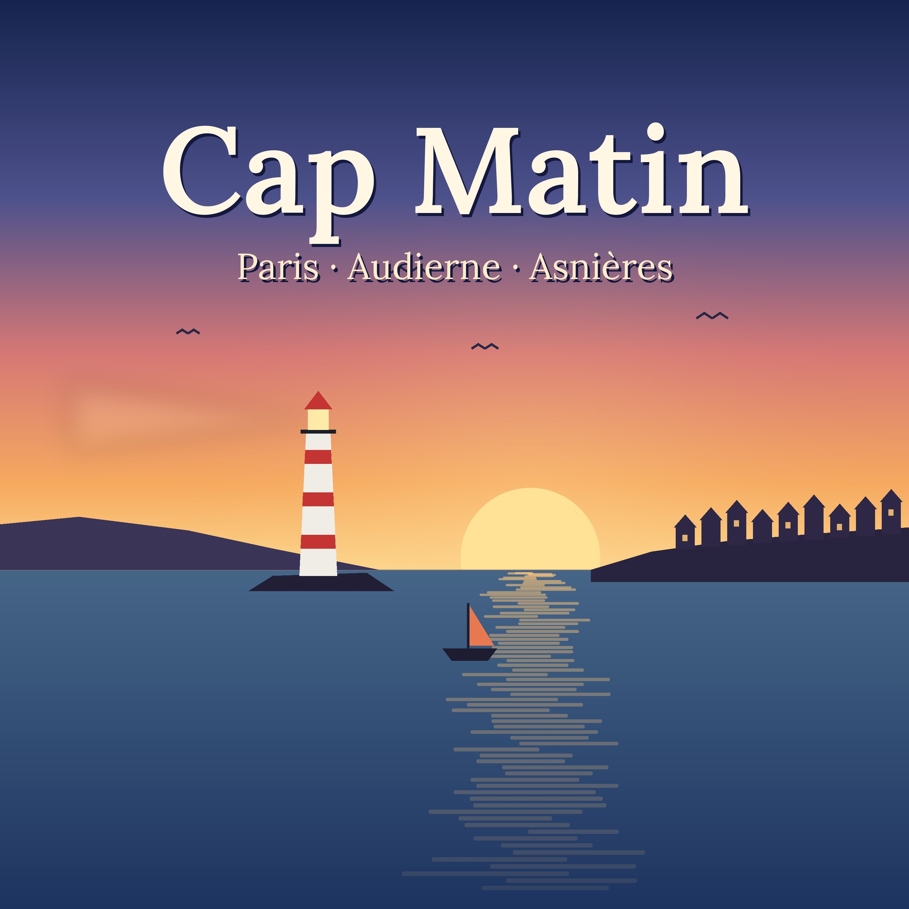

Chaque matin à six heures, sept minutes entre Paris, Audierne et Asnières.
Fil du podcast : https://k95hjfrvg2-del.github.io/le-petit-matin/cap-matin/feed.xml
https://k95hjfrvg2-del.github.io/le-petit-matin/cap-matin/feed.xml